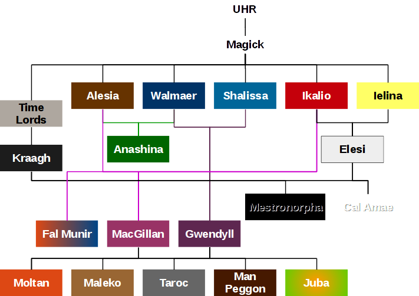
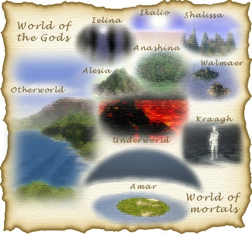
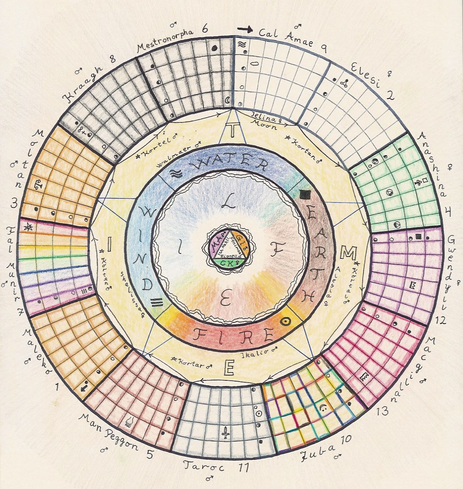
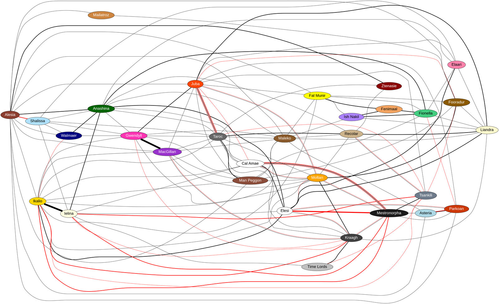

In the beginning…
…there was the allmighty god Uhr, the personified knowledge of all. Uhr had total ability and could be, do or have anything at will. And all the god wanted, was a game – to not be bored. So Uhr created Magick, the complete mystery, the unknowable. And Magick was a god, the god of chaos, randomity, unpredictability and mystery. The universe now encompassed two extremes, Uhr and Magick. Magick in this earliest period was a total randomity, unpredictable even to Uhr. And so the game was set and the two powers clashed. They interchanged, vanished and resolved into what is now known as the world. Uhr and Magick degenerated and ceased to exist but they gave birth to the game Uhr wanted. Knowledge and magick still exists but in the milder forms known in our world today.
From the friction between Uhr and Magick the elements emerged. The first in creation was Alesia, the mother earth. She formed the basis on which all else was built and she represents the basic stability. But the game needed motion and thus came water, and the waterlord Walmaer ruled the sea. But the motion was slow and the freedom limited. The windlady Shalissa supplied speed to the motion and freedom to the world, like the winds that lifts the eagle to the sky. The next to emerge was Ikalio, the sun , the god of fire. He is the ultimate in speed and the giver of life, the creator of thought. There is nothing faster than the thought.
And then came Ikalios’ ally Ielina, the moon. Ielina watches over the world when Ikalio is resting. But she is also the timekeeper and that is her main mission, to turn the wheel of existence. The counsel of time also emerged directly from the interchange betwwen Uhr and Magick. The five time lords has their main purpose to preserve the game, to see to its continuance. They build the basis for tings to happen and through Ielina they turn the wheel of existence.
The six Primary Gods are considered to be Alesia, Ikalio, Shalissa, Walmaer, Ielina and the Time Lords. The latter are often counted as one God and are rarely if ever worshipped as they never interact with mortals.

The world was devided between Alesia and Walmaer, between the land and the sea. But the borders were ever changing and the water and the land was in constant fluxation. With the help of Ikalio, Alesia and Walmaer gave birth to a beautiful goddess, and Anashina the goddess of nature, gave life to the land and the sea. At the same time in the sky, Ikalio and Ielina happened to cross paths and Elesi, the goddess of creation was born. The five time lords saw this beautiful goddess and to further the preservation of the game, they created her counterpart Kraagh, the god of death and decay.
By accident or plan, Elesi and Kraagh happened to meet twice before they could realize the consequences of the powers they unleashed. From their first meeting the Devil erupted and from their second came the Saint.
Now this was the first era of the gods, before emotions entered in and the gods started acting human and falling in love with each other. The first era was some 20 ort ago. At this time, the humans and other creatures in the world was brought into existence. Little is known about how this came about, though many legends exist. About 19 ort ago the second era of the gods started when Alesia and Ikalio found eachothers heart. Their godly emotions brought forth two sons, Fal Munir, the sage and Macgillan.
In their romantic adventures Walmaer and Shalissa got one daughter, Gwendyll.
Macgillan and Gwendyll, both created by love found eachother and was the first to ever marry. They founded the kingdoms on earth and led the humans to a civilized way of life. They got five sons, all whom played an important role towards the humans and their civilizations.
They were Moltan – the judge, creator of law and order, Maleko – the lonely one, Taroc – the warlord, Man Peggon – the god of strength and last and often considered least, Juba – the joker, the god of fun and entertainment. Now this concluded the second era of the gods, some 18 ort ago.
The powers of Magick was taken by three powerful entities and divided amongst thjem. These were Ish Nakil – the silent, master of innate magick, Fenimaal – the power, master of willpower magick and Fionella the witch – master of natural magick. Many gods, demigods, powerful entities, demons and faeries have later come into the world. Many have played and some still play an important role in our destiny and course of life. To lead a successful life one is advised to know about the forces that rules one's life, though treat it with care and awe, these forces are greater than you.
The History of the Gods
-20 ort: The world is created, the gods first era starts.
-19 ort: The second era starts with the comming of the lesser gods.
-18 ort: The distribution and balancing of power is completed, the wheel of existence is finalized.
-16 ort: The three masters of magick grasps this power and divide it amongst themselves.
-15 ort: The great war for power begins. The war is between the good and the evil, between the light and the darkness. The war threatens the wheel of existence.
-14 ort: The elements join forces and the timelords intervene to end the war.
-10 ort: The second thrust for power: The timelords and the masters of magick against the elements and the moon.
-09 ort: The balance of power is regained and stabilized with the help of the Dragon kingdom. The faeries entered this world from the Otherworld.
The World of the Gods

Spirits inhabit bodies on Amar. If they lead a “normal” life, they are recycled after death by Kraagh, and thus get to inhabit a new body on Amar.
Before spirits are returned to Amar, Kraagh strips them of their memory of their former life. If they have been a faithful follower of a particular god, that god will “tag” that spirit as his. Kraagh sees this and sends the spirit to the part of The World of the Gods run by that particular god.
The World of the Gods is quite similar to Amar except that the gods live there. It is hyper fantasy gaudy with stereotypical landscapes. Alesia rules in The Land of Farming with The Great Mountain in the middle, Walmaer rules The Island Kingdom, Anashina rules in The Great Forest, etc.
If the spirit has done a lot of evil and nobody wants it and Kraagh sees that it is not wanted in Amar either, it goes to The Underworld (Hell) in the wrong end of the whip. But if the spirit has pleased Mestronorpha and become one of his priests, he will still go to The Underworld – but in the right end of the whip.
The Wheel of Existence
The year has 13 months - each month honoring one God. Each month has 4 weeks with 7 days per week. It all fits neatly in to a Wheel of Existence with all the main Gods in one descriptive image. The calendar turns clockwise. There are several holy days throughout the year as the image shows.
The weeks within a month each have a name (after the phase of the moon):
- InIelina ("No Ielina")
- UrIelina ("Beginning Ielina")
- AlIelina ("All Ielina")
- DeIelina ("End Ielina")
Each day of a week is named after one lesser God:
- Recolar (sports & competition - son of Taroc)
- Mailatroz (trading - son of Ikalio)
- Ztenasie (wine and food - daughter of Alesia)
- Elaari (passion & arts - daughter of Elesi)
- Tsankili (thievery & treachery - son of Mestronorpha)
- Fooradur (diplomacy - half human, half dwarf)
- Liandra (hope and dreams - daughter of Ielina)
The GM keeps track of the days as the characters evolve through the game. Click the image for larger size.


Overview of the Gods and their Worshipping
| God's Name | Gender | Domain | Signifying Number |
Symbol | Holy Day | Special Powers | Priest Rank |
|---|---|---|---|---|---|---|---|
| Alesia | ♀ | Earth | ¼ | 8 Gwendyll | Earth & Protection Magick | Priest | |
| Ikalio | ♂ | Fire | ¼ | 15 Taroc | Fire Magick | Priest | |
| Shalissa | ♀ | Wind | ¼ | 22 Fal Munir | Air Magick | Priest | |
| Walmaer | ♂ | Water | ¼ | 1 Cal Amae | Water Magick, Swim | Priest | |
| Ielina | ♀ | Moon, Timekeeping | 28 | 28 Mestronorpha | Perception Magick, Awareness (&skills) | Seer | |
| Time Lords | ♂ | Time | ⅕ | (None) | (None) | (None) | |
| Cal Amae | ♂ | Good Deeds | 9 | 9 Cal Amae | Melee Defense | Paladin | |
| Elesi | ♀ | Creation/Art | 2 | 2 Elesi | Life Magick | Priest | |
| Anashina | ♀ | Nature | 4 | 4 Anashina | Missile Weapons | Druid | |
| Gwendyll | ♀ | Queen of the Gods | 12 | 12 Gwendyll | Social Skills | Baroness | |
| MacGillan | ♂ | King of the Gods | 13 | 13 MacGillan | Leadership | Baron | |
| Juba | ♂ | Entertainment | 10 | 10 Juba | Music/Dance skills | Jester | |
| Taroc | ♂ | War | 11 | 11 Taroc | Melee Skills | War Lord | |
| Man Peggon | ♂ | Strength | 5 | 4 Man Peggon | Strength | Lord | |
| Maleko | ♂ | Inner Strength | 1 | 1 Maleko | Endurance | Monk | |
| Fal Munir | ♂ | Knowledge & Wisdom | 7 | 7 Fal Munir | Learning | Sage | |
| Moltan | ♂ | Judgement | 3 | 3 Moltan | Awareness | Judge | |
| Kraagh | ♂ | Death & Reincarnation | 8 | 8 Kraagh | Black Magick | Priest | |
| Mestronorpha | ♂ | Evil Deeds | 6 | 6 Mestronorpha | Black Magick | Servant | |
| Ish Nakil | ? | Innate Magick | ⅓ | 15 Anashina | Innate Magick | Entity | |
| Fenimaal | ♂ | Willpower Magick | ⅓ | 18 Anashina | Spell skills | Mage | |
| Fionella | ♀ | Natural Magick | ⅓ | 21 Anashina | Rituals | Witch | |
| Recolar | ♂ | Sports & Competition | 1 | 1 Taroc | Coordination | Master | |
| Mailatroz | ♂ | Trading | 2 | 14 Taroc | Trading | Master Merchant | |
| Ztenasie | ♀ | Wine & Food | 3 | 1 Juba | Cooking | Master Chef | |
| Elaari | ♀ | Passion & Arts | 5 | 28 Juba | Art skills | Master | |
| Tsankili | ♂ | Thievery & Treachery | 1 | 1 Mestronorpha | Sleight, MvQt & Hide | Master Thief | |
| Fooradur | ♂ | Diplomacy | 2 | 2 Moltan | Social Lore | Diplomat | |
| Liandra | ♀ | Hope & Dreams | 1 | 1 Elesi | Drawing, dancing, sculpting, ... | Dreamer | |
| Asteria | ♀ | Ice | 6 | 2 Cal Amae | Ice Magick | Frost Mage | |
| Parkoan | ♂ | Lava | 7 | 16 Taroc | Lava Magick | Lava Mage |
There are cults worshipping each and every God. The cult ranks are very similar. Novices are called Lay Members and receive no special treatments, benefits or powers. A ritual is required for attaining the rank of Initiate. The ritual depends on the cult. An Initiate can develop a Cult Standing that can be used in critical situations to call upon the power of the God (see Magick). In addition, on the God's Holy Day, an Initiate will receive a +3 bonus in the God's Special Power (see table above). The highest rank is that of a Priest. A Priest receives a +3 bonus in the Special Power the 5 days before and after the Holy Day and +6 on the Holy Day. Attaining a Priest Rank requires a set of greater abilities as well as years of servitude as an active Initiate. The name of the Priest Rank for each cult is given in the table above under "Priest Rank".
The actual attributes of each God and Goddess is given on each of their pages. These are approximations as they shift as time goes by.
Major Gods are those featured in the Wheel of Existence - the Elements, the Months, the Magick Trio, Time Lords and Ielina. The other Gods are considered Minor. Major Gods regenerate approximately 20 BP per round, while Minor Gods regenerate some 10 BP per round.
Relationship between the Gods
This map shows the relationships between the Gods of Amar (click for a full size detailed image)


Relations between the Gods. Black lines are positive relations, while red are negative. Black and red lines indicate a complex relationship. Stronger lines indicates stronger relationships.
Other Gods
Here are a list of other known Gods in Amar:
| God's Name | Domain |
|---|---|
| Duargur | Prime God of the Dwarves, Willpower, Stubbornness |
| Chill Padde | Patience, slowness, relaxation, laziness |
| Oddmar | Service |
Next: The World